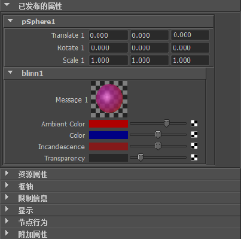

使用“资产编辑器”(Asset Editor)，可以通过发布节点相关联的消息属性来发布样例（例如，Blinn 着色节点样例）。样例可提供着色节点特性的直观反馈。
发布样例
- 打开“资产编辑器”(Asset Editor)（资产 > 资产编辑器(Assets > Asset Editor)）。
- 选择包括着色节点的资产，然后单击“固定资产”图标
 。
。 - 展开着色节点的属性列表，然后选择“消息”(Message)属性。
- 单击“发布选定属性”(Publish Selected Attributes)按钮 (
 )或“使用指定名称发布选定属性，然后将其绑定”(Publish Selected Attribute with a Specified Name)按钮 ()，将“消息”(Message)属性发布到资产。注：
)或“使用指定名称发布选定属性，然后将其绑定”(Publish Selected Attribute with a Specified Name)按钮 ()，将“消息”(Message)属性发布到资产。注：因为“消息”(Message)属性将使用默认名称“消息”(Message)进行发布，所以最好使用有意义的自定义名称发布该属性。当资产中包含多个着色节点的多个已发布样例时，这点尤为重要。
- 发布着色节点的其他控件（例如，颜色、透明度等）。
在“属性编辑器”(Attribute Editor)中打开资产，查看当前显示在“已发布的属性”(Published Attributes)区域中的样例。修改着色器相关的属性以便相应地更新样例。
